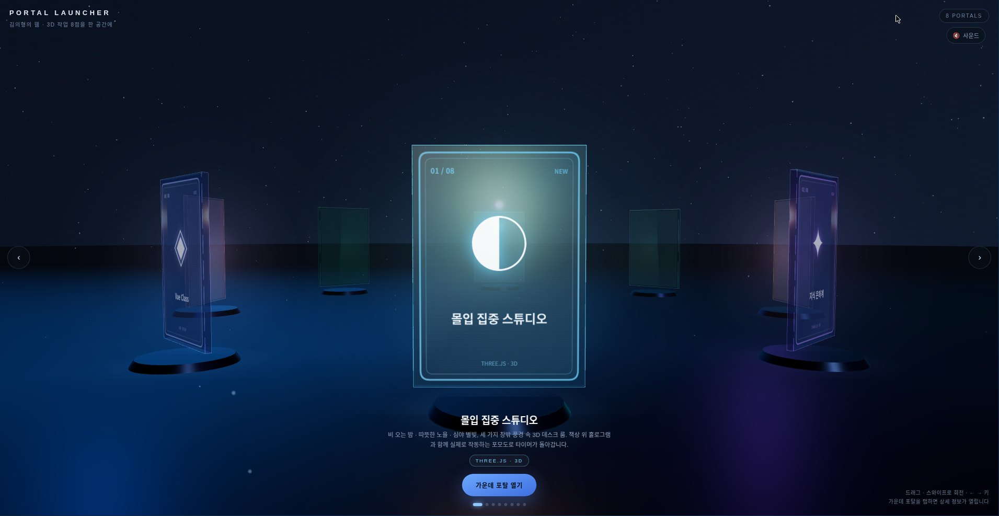
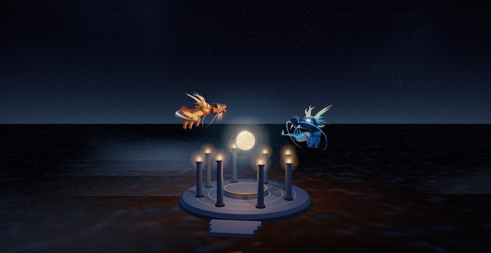
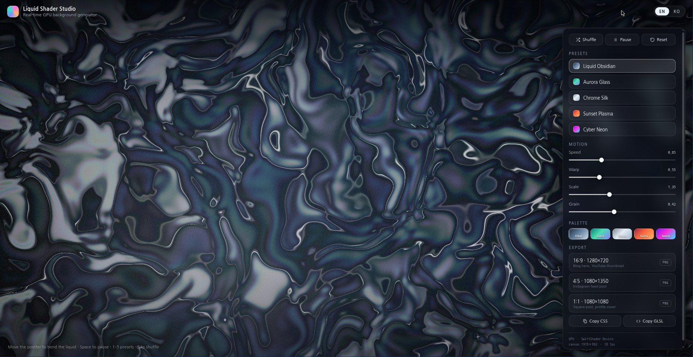

Kim Yihyung · Portfolio 2026
웹에 관심이 많았던 저는 웹디자인을 배우는 과정에서 처음으로 코딩을 접하게 되었습니다. 배워보지도 못한 영역이라 처음엔 개념이 안 잡혀 어려웠지만, 매일매일 메모장에 그날의 수업을 ‘웹 수업 1일 차, 2일 차’ 이렇게 적어가며 네이버 클라우드에 저장해 집에서도 복습했습니다. 그렇게 배우다 보니 코딩의 매력에 빠져 퍼블리셔라는 직업을 알게 되었습니다.
Three.js로 만든 포털 허브. 몰입 집중 스튜디오·지식 은하계·가상 전시관·리퀴드 셰이더까지 8개 작업으로 들어가는 입구입니다.


여의주를 지키는 청룡과 금룡이 구름과 물 위를 얽혀 납니다. 비늘·뿔·수염까지 코드로 빚은 실시간 3D에 9:16 릴스 녹화를 내장했습니다.

GPU에서 실시간으로 흐르는 리퀴드 배경을 만들고 16:9·4:5·1:1 PNG로 내려받는 GLSL 스튜디오입니다.